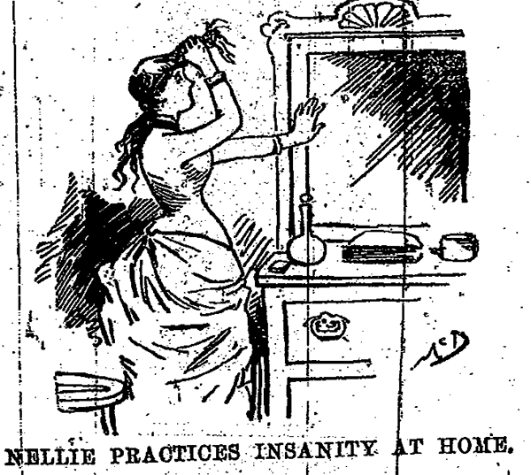
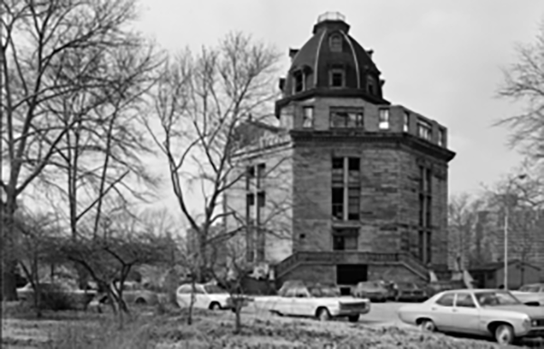

METROPOLIS OF SCIENCE
A MADHOUSE IN THE EAST RIVER

The Octagon, on the right side of the image, used to be part of the insane asylum where Nellie Bly went undercover. (New York Public Library Digital Images)
The Octagon on Roosevelt Island was once a notorious lunatic asylum investigated by journalist Nellie Bly
By Marie Doezema
This season, this decade, this century. The Octagon on Roosevelt Island is aglow with twinkling lights, warm and welcoming on a winter’s night. Young professionals check their mail in the lobby of the building and children play in a nearby common room. An art gallery is hung with colorful paintings and a seating area is lined with helpful posters explaining the building’s environmental and LEED-certified design. Advertised as an “upscale, green residential community,” the building has a vague whiff of new-car smell but is nothing if not habitable, even cozy.
This wasn’t always so.
Autumn, 1887. Roosevelt Island was known as Blackwell’s Island, home to what would become an infamous mental institution, or “lunatic asylum” as it was known in those days. The island represented The Worst Case Scenario, the deep crevices of fear most people visit only in nightmares or bouts of insomnia. This was the end of the road, a floating world of madness and destitution, neglect and seclusion.
This is also where pioneering newspaper journalist Nellie Bly came to write the piece that would make her career—a shocking exposé of asylum conditions in the New York World. A young reporter at the time, Bly took her editor up on a bold assignment to go undercover as a patient. She spent ten days and ten nights in the asylum, supping on spoiled meat and rancid butter, enduring dousings in cold water, listening to the haunted shrieks of other patients.
From journalist Nellie Bly's 1887 book, Ten Days in a Mad-house.
Her piece, eventually published as “Ten Days in a Mad-House,” came to have enormous impact on the treatment of patients at the hospital. As she writes in the introduction, “I am happy to be able to state as a result of my visit to the asylum and the exposures consequent thereon, that the City of New York has appropriated $1,000,000 more per annum than ever before for the care of the insane.”
The scene that greeted Bly on her arrival at the hospital in 1887 was far from what the diplomats and professionals living on the island these days see when they arrive home from the office. Bly describes the “human rat-trap”:
The long, uncarpeted hall was scrubbed to that peculiar whiteness seen only in public institutions. In the rear of the hall were large iron doors fastened by a padlock. Several still-looking benches and a number of willow chairs were the only articles of furniture. On either side of the hall were doors leading into what I supposed and what proved to be bedrooms. Near the entrance door, on the right-hand side, was a small sitting-room for the nurses, and opposite it was a room where dinner was dished out. A nurse in a black dress, white cap and apron armed with a bunch of keys had charge of the hall.
Today, there is a benevolent if vigilant doorman who has charge of the hall, greeting residents and fielding pizza deliveries. Though the sweeping spiral staircase is still the centerpiece of the building, little else about The Octagon has remained the same. Penthouses have replaced ascetic cells, professionals have replaced patients. Recreation no longer consists of guided walks led by stern nurses but is supplied by tennis courts, a heated pool and a state-of-the-art fitness center.
The Octagon, before refurbishing. (National Park Service/Wikimedia Commons)
Redesigned by Becker + Becker Associates in 2006, The Octagon takes a censored pride in its past. The facility’s website includes a gallery of black and white photos featuring nurses in crisp uniforms and a description of the building’s history:
In 1841 The Octagon opened as a beautifully designed island retreat by Alexander Jackson Davis, the era’s most influential architect, known for his lavish Hudson River estates. Davis’ design for the building’s signature five-story octagonal rotunda incorporated stately blue-gray stone quarried on the island. So beautiful was the rotunda that visiting English novelist Charles Dickens praised the building as “remarkable,” its flying spiral staircase “spacious and elegant” as it rose from an illuminated glass-brick floor. In 1894 The Octagon was converted into the Metropolitan Hospital, for which a steamer service ferried patients and staff across the East River.
When the Metropolitan Hospital closed in 1955, the building fell into neglect. The two wings extending from the rotunda were demolished, while a series of fires destroyed the domed roof. The Octagon joined the National Register of Historic Places in 1972, but its survival remained in doubt for decades.
While it’s true that Dickens visited the hospital and used the words remarkable, spacious and elegant in his description of the space, he was far less smitten with the place than these carefully selected snippets suggest. As he writes in American Notes:
One day, during my stay in New York, I paid a visit to the different public institutions on Long Island, or Rhode Island: I forget which. One of them is a Lunatic Asylum. The building is handsome; and is remarkable for a spacious and elegant staircase. The whole structure is not yet finished, but it is already one of considerable size and extent, and is capable of accommodating a very large number of patients.
I cannot say that I derived much comfort from the inspection of this charity. The different wards might have been cleaner and better ordered; I saw nothing of that salutary system which had impressed me so favourably elsewhere; and everything had a lounging, listless, madhouse air, which was very painful. The moping idiot, cowering down with long dishevelled hair; the gibbering maniac, with his hideous laugh and pointed finger; the vacant eye, the fierce wild face, the gloomy picking of the hands and lips, and munching of the nails: there they were all, without disguise, in naked ugliness and horror. In the dining room, a bare, dull, dreary place, with nothing for the eye to rest on but the empty walls, a woman was locked up alone. She was bent, they told me, on committing suicide. If anything could have strengthened her in her resolution, it would certainly have been the insupportable monotony of such an existence. The terrible crowd with which these halls and galleries were filled, so shocked me, that I abridged my stay within the shortest limits, and declined to see that portion of the building in which the refractory and violent were under closer restraint.
Today, a small plaque at the entrance of The Octagon is the only reminder of what took place within these walls. “Built as the administrative center of the New York City lunatic asylum in 1837-39, Octagon Tower was designed by the prominent architect Alexander Jackson Davis, one of the first municipal institutions of its type in the country. The site was selected because the pleasant island surroundings were thought to be conducive to both physical and mental rehabilitation.”
Nellie Bly, the pseudonym of Elizabeth Cochrane Seaman, circa 1890. (Wikimedia Commons)
Thanks in part to Nellie Bly and the investigative piece that brought the asylum’s appalling conditions out of the shadows and off the island, The Octagon did come closer to fulfilling its mission as a physical and mental refuge; at least it became less of a nightmare.
On a quiet December night at The Octagon, if you close your eyes and listen closely, you can almost—just almost—hear the swish of skirts and the scratching of pen on paper. It’s Nellie, scouring the hallways for abuse, fulfilling her “desire to be convinced that the most helpless of God’s creatures, the insane, were cared for kindly and properly.”
Connecting to Device
Device is Ready